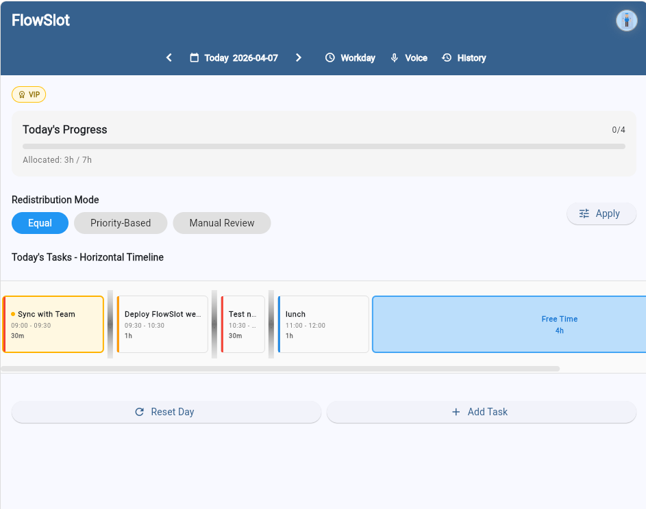
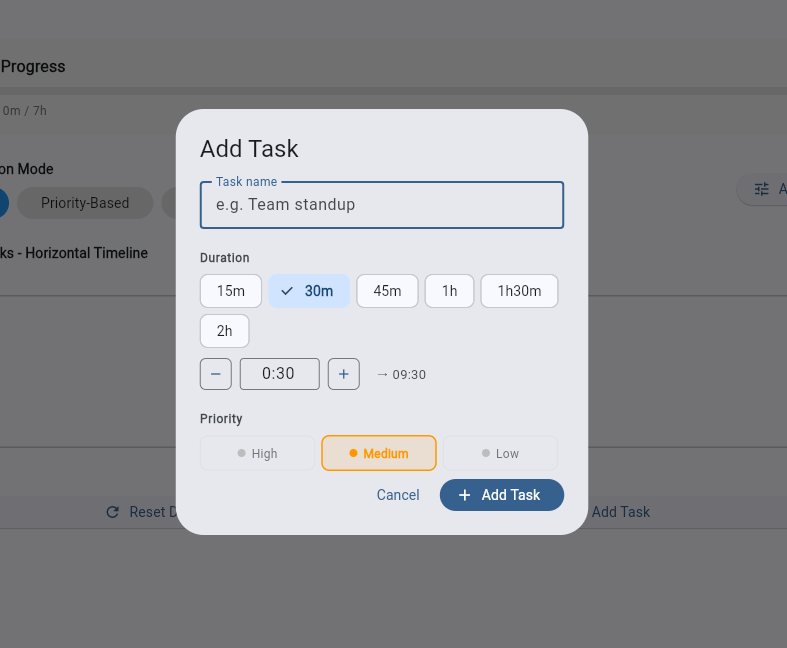

01
Plans change
A task takes longer, a meeting moves, or a priority appears. Rebuilding the entire schedule adds friction.
Introducing FlowSlot
FlowSlot is a visual time-blocking and schedule planning application built around flexible, adjustable blocks instead of rigid calendar entries.
What is FlowSlot?
FlowSlot turns the day into a set of visual blocks that can expand, contract, and rebalance as priorities change.
Users build a daily plan with adjustable task blocks. When one task needs more time, neighboring blocks can respond. When a task finishes early, that available time can flow into the rest of the day. The concept supports vertical and horizontal planning views to make time feel tangible and easier to shape.
The problem
A traditional calendar records what was planned. FlowSlot is designed to help people actively manage what happens next.
A task takes longer, a meeting moves, or a priority appears. Rebuilding the entire schedule adds friction.
Lists show what needs doing but often hide how tasks compete for the limited hours in a day.
Finishing early should create a visible opportunity to rebalance the rest of the day.
Key Features
The current concept focuses on making daily planning tactile, visual, and responsive.
See the day as a clear sequence of sized blocks.
Adjust task duration directly with sliders or drag handles.
Let adjacent tasks respond when one block changes.
Reallocate time as work is completed or priorities shift.
Plan vertically or horizontally based on your preference.
Understand the tradeoffs behind every daily commitment.
Designed with future mobile support in the roadmap.
A productivity-first experience without unnecessary clutter.
Product Preview
The current build combines visual schedule planning, dynamic redistribution, progress tracking, and a personalized productivity system.


Development Status
Follow Development
Send a note to follow progress, share feedback, or express interest in testing future versions.